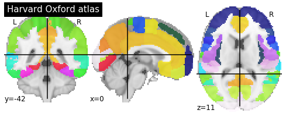

Visualisation of Nifti Files
|
 |
|---|
Plotting functions in nilearn
|
Function Name |
Function Description |
|---|---|
|
plot_anat |
Plotting an anatomical image |
|
plot_glass_brain |
Glass brain visualization. By default plots maximum intensity projection of the absolute values. To plot positive and negative values set plot_abs parameter to False. |
|
plot_img |
General-purpose function, with no specific presets |
|
plot_stat_map |
Plotting a statistical map, like a T-map, a Z-map, or an ICA, with an optional background |
|
plot_epi |
Plotting an EPI, or T2* image |
|
plot_surf_roi |
Plotting surface atlases on a brain surface |
|
|
|
|
|---|